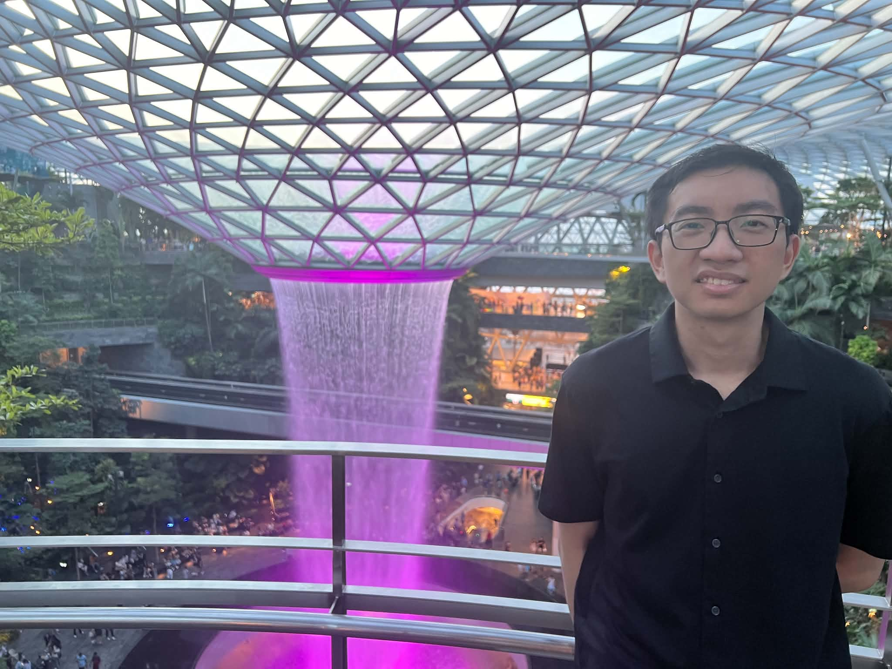

On the faculty job market · Fall 2027
Nate Thach
PhD Candidate in Computer Science · University of Nebraska–Lincoln (UNL)

Background
I am a PhD student advised by Dr. Hau Chan at the University of Nebraska–Lincoln.
My main research lies at the intersection of machine learning and computational social choice, focusing on developing large language model (LLM)-driven frameworks for automating the design of algorithms or rules that govern collective decisions such as determining the public projects to fund and locating the facilities for serving a community, with the goal of fulfulling multiple competing objectives such as efficiency and fairness in practice.
In the past, I also worked on AI for public health by developing various machine learning frameworks tailored to longitudinal tabular data for predicting short-term substance use behaviors of persons who use drugs (PWUDs) in Nebraska, which can aid stakeholders in the efficient allocation of limited resource to PWUDs who need the most help.
Publications
Conference proceedings
-
EMNLP 2026 · Forthcoming
Multi-Facility Location Mechanism Design with Large Language Models
-
HCOMP 2026 · Forthcoming
Guiding Worker Self-Selection in Crowdsourcing Contests: An LLM-Augmented Algorithmic Approach
-
AAMAS 2026
Large Language Models for Designing Participatory Budgeting Rules
-
ICLR 2025
MuHBoost: Multi-Label Boosting for Practical Longitudinal Human Behavior Modeling
-
IJCAI 2024 · AI for Good track
A Novel GAN Approach to Augment Limited Tabular Data for Short-Term Substance Use Prediction
Journal articles
-
Annals of Operations Research 2026 · 356(2), 1231–1280
Improving the Location of Facilities through Network Addition Modification: A Revisit
-
PLOS ONE 2024 · 19(11), 1–33
Analyzing and Predicting Short-Term Substance Use Behaviors of Persons Who Use Drugs in the Great Plains of the U.S.
-
Cancers 2022 · 14(7), 1654
Using Quantitative Imaging for Personalized Medicine in Pancreatic Cancer: A Review of Radiomics and Deep Learning Applications
Teaching
- CSCE 422/822: Introduction to Computational Game Theory UNL · Fall 2026 · co-taught with Dr. Hau Chan
- CSCE 310/310H: Data Structures and Algorithms UNL · Fall 2025 · guest lecturer
- PHYS 141: Elementary General Physics I (Lab) UNL · Fall 2020
Service & talks
Organizing and reviewing
Co-chair for the OptLearnMAS-26 workshop at AAMAS 2026. Reviewer for premier conferences, e.g., AAAI, IJCAI, NeurIPS, ICLR, with a reviewer distinction award at IJCAI 2026.
Invited talks
- LLMRule: Designing Participatory Budgeting Rules with Large Language Models Theory Seminar, Northwestern University · 2026
- Large Language Models for Combinatorial Optimization Problems in Transportation Transportation Engineering Seminar, UNL · 2025
- Evaluating Machine-Learning Models for Predicting Short-Term Substance Use Behaviors Annual Symposium on Substance Use Research, UNL · 2024